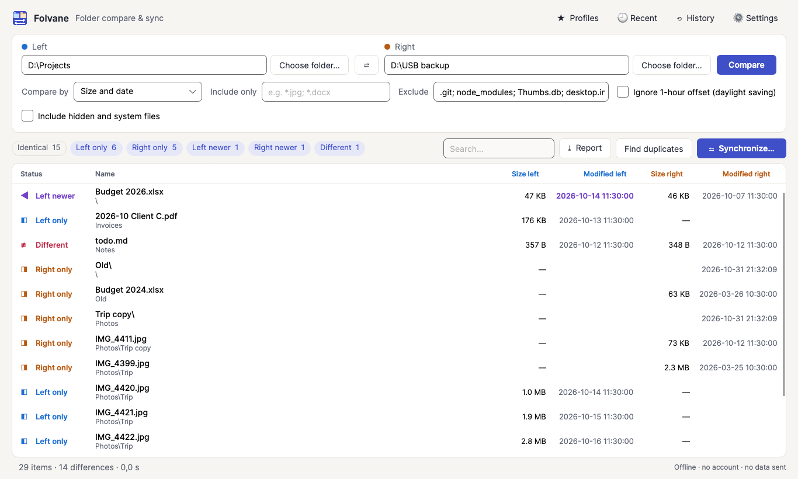
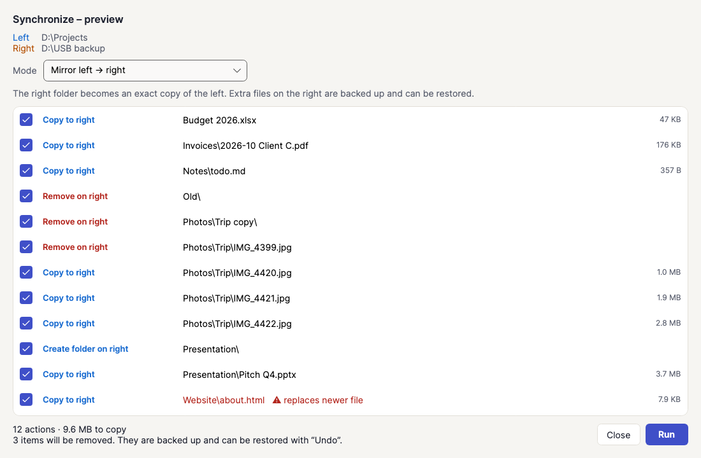
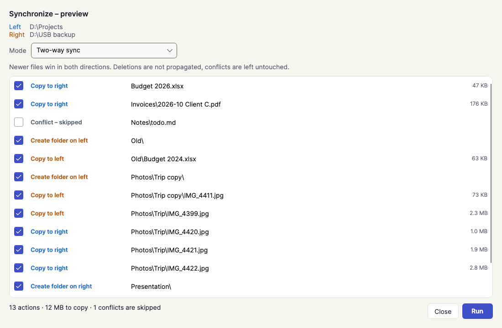
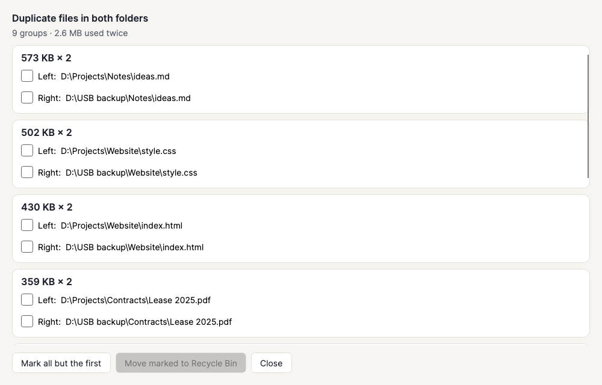
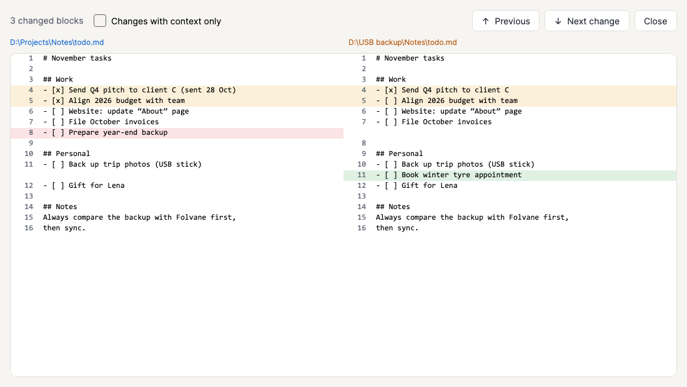

Two folders. One look.
Folvane shows you which files are missing, newer or different – and syncs your folders when you want, with a preview, backups and one-click undo. Everything stays on your PC.

Windows 10 (1809+) and 11 · x64 and ARM64 · English and German · One-time purchase, no subscription

Everything you need to keep folders in step
Compare
Every file with its state: identical, left only, right only, left newer, right newer or different. By size and date in seconds, or byte by byte. Color filters and instant search.
Sync with preview
Mirror either way, update the right side without deleting anything, or two-way where the newer file wins. Every action is listed first and can be unticked.
Undo and history
Replaced and removed files are backed up first. Roll back the last sync completely with one click. Every run is kept in the history with a log.
Text diff
Double-click a changed text file to see both versions side by side. Changed, added and removed lines are highlighted; F8 jumps to the next change.
Profiles
Save a folder pair with its filters and sync mode, e.g. “Photos → USB stick”, and compare it again with one click.
Duplicates
Find identical files across both folders by content, not by name, and move copies to the Recycle Bin. One copy always stays.
Reports
Save the result as PDF, HTML or CSV – for clients, colleagues or your own records.
Command line
Start from a terminal or script: folvane --profile "Photos → USB stick" or folvane <left> <right>.
See it in action




Safe by design
A folder tool touches your real files, so Folvane is built to ask first and to be reversible.
Preview first
Nothing is copied or removed until you have seen the list and confirmed it.
Backups and undo
Files that are replaced or removed are backed up in a hidden .folvane-backup folder, so the last sync can be rolled back.
Safe copying
Copies are written completely before they replace anything, and keep their modified date.
Conflicts stay untouched
If both sides changed, two-way sync leaves the files alone instead of guessing.
Recycle Bin for duplicates
Duplicate copies go to the Recycle Bin, and one copy is always kept.
Offline and private
No account, no cloud, no ads, no telemetry. Logs stay on your PC.
How it compares to free tools
Free tools can be a fine choice. This is what Folvane adds, and a checklist worth running through for any tool you consider.
| How it compares to free tools | Folvane | Typical free tools |
|---|---|---|
| Preview before every sync | Always | Varies |
| One-click undo of the last sync | Yes, with history and logs | Often not available |
| Side-by-side text diff | Built in | Sometimes a separate tool |
| Saved profiles and command line | Yes | Varies |
| Duplicate finder | Built in | Often a separate tool |
| PDF, HTML and CSV reports | Yes | Rarely |
| Modern Windows 11 look, light and dark | Yes | Often dated |
| Ads or bundled offers | None | Varies |
| Updates and support through the Store | Yes | Varies |
Simple pricing
€9.99
One-time purchase through the Microsoft Store. No subscription, no account, no in-app purchases. The price shown in the Store applies; it can vary by country and local taxes.

System requirements
- Windows 10 version 1809 or newer, or Windows 11
- x64 or ARM64 PC
- About 150 MB of storage
- No internet connection needed to use the app
Guides
Compare folders on Windows
How to see which files differ between two folders, and what Folvane shows you.
Check your backup
How to verify that a backup folder is complete and up to date.
Frequently asked questions
Does it work with USB drives and network shares?
Yes, with anything Windows shows as a folder. For FAT/exFAT drives and memory cards there is a time tolerance and the option “ignore 1-hour offset” for daylight saving time.
Does two-way sync detect deleted files?
No, on purpose. Without a stored previous state that would be guesswork. Use “Mirror” when deletions should be carried over; it is always previewed and backed up.
Can I undo a sync?
Yes. Replaced and removed files are backed up first, and the last sync can be rolled back from the history.
How are files compared?
By size and date (fast) or byte by byte (certain). You can include only certain types such as *.jpg; *.docx, or exclude patterns such as node_modules; .git; *.tmp.
Does Folvane send data to the internet?
No. The app has no network access for your data, no account and no telemetry. See the privacy page.
Is there a subscription?
No. It is a one-time purchase.